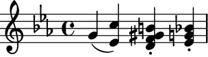
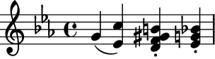
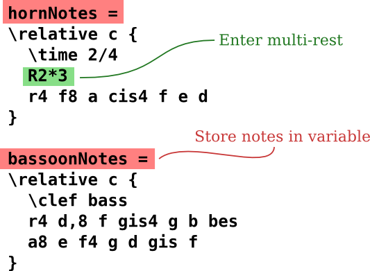

テキスト入力
楽譜を “コンパイル” する

(クリックすると拡大します)
LilyPond は コンパイル システムです: 音符を保持しているテキスト ファイルに対して実行します。結果として得られる出力は、スクリーン上で閲覧するか、プリントします。いくつかの点で、LilyPond はグラフィカルな楽譜編集ソフトウェアよりもプログラミング言語に似ています。
ツールバーから音符をドラッグして、楽譜に配置するのではありません。テキストを打ち込むことで楽譜を記述します。このテキストは LilyPond によって解析 (あるいは “コンパイル”) され、美しく譜刻された楽譜が生成されます。
グラフィカル ユーザ インターフェイスに慣れている人は、新しい方法を学ぶ必要があるかもしれません。 しかしながら、そうする価値は間違いなくあります！
Note: テキスト入力についての簡単な概要を用意しています – これは、見た目ほど難しいものではありません！提示した例の詳細を理解できなくても心配ありません。 初心者向けドキュメントがゆっくりとしたペースで説明しています。
A B C と同じくらい簡単
音符は英字と数字で表現されます。特殊なコマンドはバックスラッシュと一緒に入力します。


臨時記号は違う名前で入力します。シャープには -is を、フラットには -es を付けます (これらは、オランダ語の音符名で、他の言語用もあります)。LilyPondがどこに臨時記号を付けるかを判断します。
 

ポップ ミュージック
リード譜を作るために、コードと歌詞を一緒に配置します:


オーケストラ パート
入力ファイルには楽曲の音符が入っています。スコアとパート譜を、一つの入力ファイルから作り出すことができます。そのため、音符を変更すると常にパートとスコア両方に影響します。音符を共有するには、その音楽を変数に割り当てます:
この変数は、単一のパートに使うことができます (ここでは、移調され、複小節休符はまとめられています):


同じ変数をフル スコアで使うことができます (ここでは、コンサート ピッチです):


初心者のためのドキュメント
多くのユーザがこのような方法で楽譜を入力することに違和感を覚えます。そのため、新しいユーザを援助するために、学習 から始まる広範囲なドキュメントを用意してあります。学習マニュアルは LilyPond を始めるのにぴったりです。ユーザが感じるであろう疑問に対する答えをたくさん含んでいます。
時には新しいユーザが LilyPond の挙動の様子に混乱させられることがあります。LilyPond が正しく動作しているか疑う前に、学習マニュアルを読んでください。
もっと掘り下げた情報が マニュアル にあります。
LilyPond ユーザの Ben Lemon は、ブログに新規ユーザのための ビデオチュートリアル を作りました。
より簡単な編集環境

(クリックすると拡大します)
LilyPond は元来、最高品質の楽譜を作り出すことを目的としています。グラフィカル ユーザ インターフェイス (GUI) を作ることは、本来の趣旨から外れます。しかしながら、LilyPond 入力ファイルの作成をより簡単にすることを目指しているプロジェクトが別に存在します。
いくつか編集環境は、構文ハイライト、自動コマンド補完、それに作成済みのテンプレートを用意しています。 また、他のプログラムでは、グラフィカルな楽譜を直接操作することができる GUI を提供しているものもあります。更なる情報は、より簡単な編集手段 を読んでください。
他の言語: English, català, česky, deutsch, español, français, magyar, italiano, nederlands, 中文
About automatic language selection.